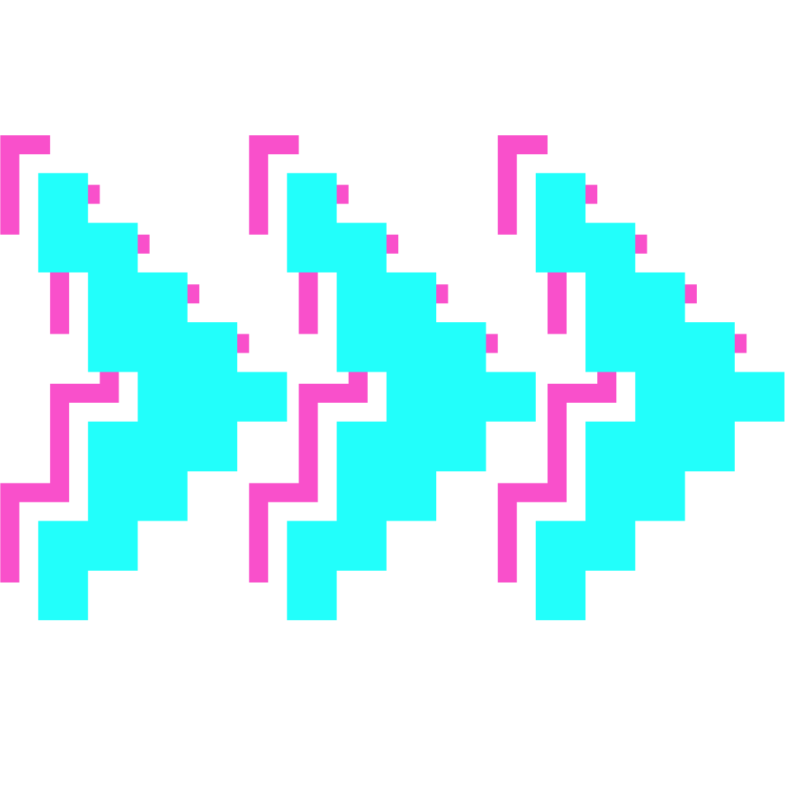

Eva Tharrats
Développeuse web full-stack
Apprenante chez Ada Tech School
 A propos

Après 30+ années d'expérience professionnelle en tant qu'assistante et assistante de direction trilingue, j'ai décidé en 2023 de faire une reconversion professionnelle dans le développement web.
Dans mon antérieure vie professionnelle, j’ai occupé le poste d’assistante puis d'assistante de direction trilingue.
Avec le temps, mon intérêt pour l’informatique et la technologie, ainsi que l'envie d'apprendre, m’ont motivée à entreprendre une reconversion.
J’ai suivi une formation de développeur/intégrateur web dans l’organisme IFOCOP à Paris, dont j'ai obtenu le diplôme.
Lors de ma formation théorique d’une durée de 4 mois, j’ai appris les langages d'intégration et de programmation Javascript/JQuery, ainsi que les langages back-end. Nous avons également abordé l'UX/UI et le SEO (référencement naturel).
J'ai également appris le CMS Wordpress, que j’ai pratiqué lors de mon stage.
Dans un marché de l'emploi très compétitif et exigeant il m'est apparu nécessaire d'étoffer mes connaissances, j'ai donc décidé de poursuivre ma formation.
Pour cela j'ai fait le choix de rejoindre l'école ADA TECH SCHOOL, première école de tech inclusive en France.
Je suis en formation chez ADA depuis janvier 2025.
Pour mener à bien ma formation, je recherche une alternance de 12 mois à partir d'octobre 2025.
Le format de cette formation est de 4 jours en entreprise et un jour en formation à l'école, en contrat de professionnalisation.
Je reste disponible pour vous rencontrer et discuter de vos projets et vos besoins.
A très bientôt !